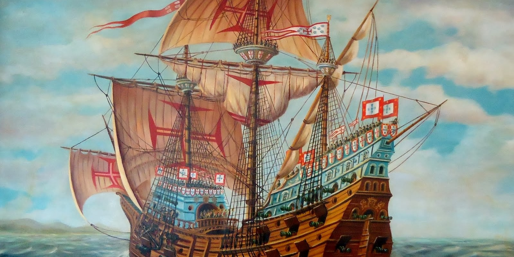

Vamos descobrir?
Nesta museu podes navegar pelas diversas salas da nossa exposição. Para isso basta ir ao mapa e escolher uma. Dentro de cada sala tens de procurar os coletáveis, que vão aparecer na tua coleção. Lá podes analisar cada um detalhadamente.